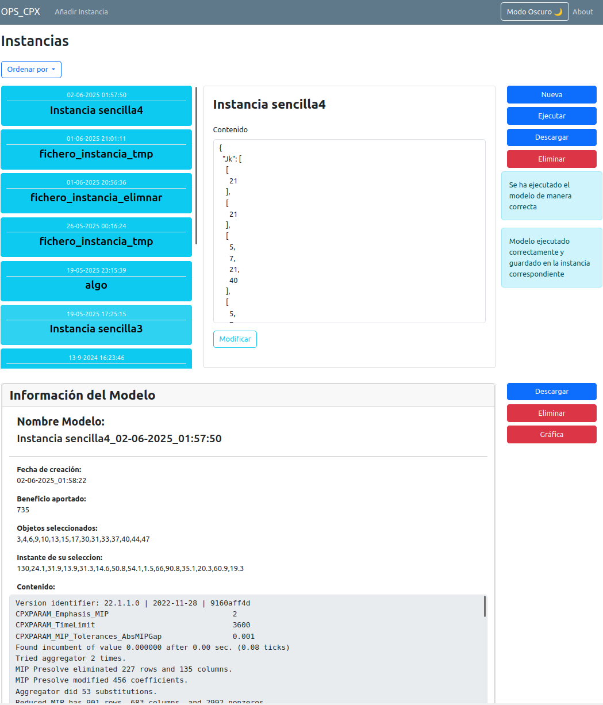

Manual de Usuario
Bienvenido al sistema. Este manual tiene como objetivo guiarte en el uso de las funcionalidades principales de la plataforma.
1. Barra de Navegación

La barra superior de navegación contiene accesos a las distintas secciones del sistema:
- OPS_CPX: Vista principal encargada de mostrar e interactuar con las Instancias
- Añadir Instancia: Formulario para añadir nuevas instancias.
- Modo oscuro/claro: Permite cambiar el color de la Web
- Manual: Acceso a esta guía.
2. Pestaña OPS_CPX
En esta sección puedes visualizar y administrar todas las instancias existentes.

Las funcionalidades principales incluyen:
- Listado de Instancias
- Ordenar Instancias por fecha de creación o por nombre
- Visualizar detalles de cada instancia,nombre y contenido.
- Modificar contenido de la Instancia en cuestión.
- Nueva instancia, permite ir a la pestaña de creación de instancias
- Ejecutar una instancia para procesarla.
- Eliminar instancias que ya no sean necesarias.
- Ver si hay un modelo asociado y revisar su información.
- Descargar el contenido de la instancia en un archivo.
3. Pestaña Crear Instancia
Desde esta sección puedes crear una nueva instancia de dos formas:
- Manual: Rellenando los campos con el nombre y contenido de la instancia directamente desde el formulario.
- Automática: Subiendo un archivo con los datos necesarios (JSON, CSV, etc.).
Una vez creada, la instancia aparecerá en la pestaña OPS_CPX y estará disponible para interactuar con ella.

Contacto y Soporte
Si tienes dudas adicionales o detectas algún error, contacta con el equipo de desarrollo o revisa la sección de preguntas frecuentes.